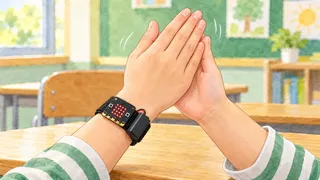
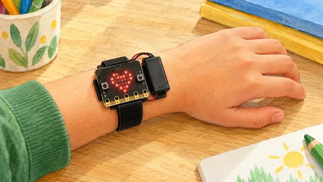
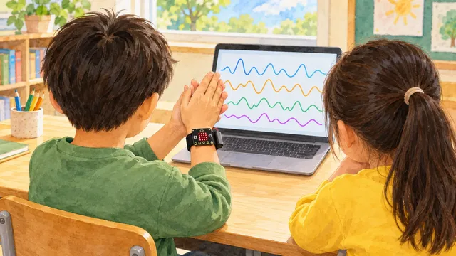
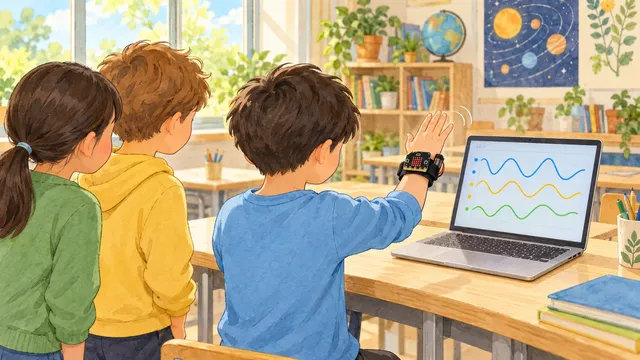
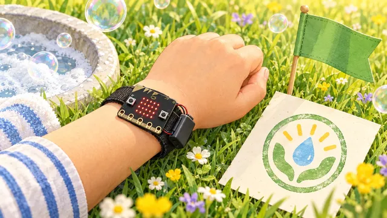

체험 활동 · 시도 그래프를 샘플과 견주어 먼저 짚어요.
연습 모드 · 버튼으로 그래프를 골라요
태블릿을 꼭 쥐고 책상 위에서 작게 움직여요
녹화를 눌러 동작마다 샘플 3개를 모아요. 시험 카드가 나오면 화면이 무엇으로 알아볼지 먼저 짚어요.
짧게 하려고 카드를 여섯 장만 써요. 실제 수업에서는 동작마다 다섯 번씩 해요.

x 실선 · y 긴 점선 · z 짧은 점선
확신 %는 얼마나 닮았는지예요. 맞았다는 뜻은 아니에요(연습용 셈).
| 카드 \ 알아봄 | 손바닥 | 손등 | 손가락 |
|---|


바꾸는 것은 샘플 수 하나예요. 같은 시도 여섯 번 가운데 몇 번 알아볼까요?

화면은 특징을 보고 알아봐요. 켠 특징만 쓰면 새 그래프 6장을 몇 장 알아볼까요? 눌러 보기 전에 생각해요.
특징을 켠 다음, 여섯 장 가운데 몇 장을 알아볼지 먼저 짚어요.

연습용 기록이에요 · CreateAI로 다시 해 봐요
그림 일부는 생성형 AI로 만들었어요